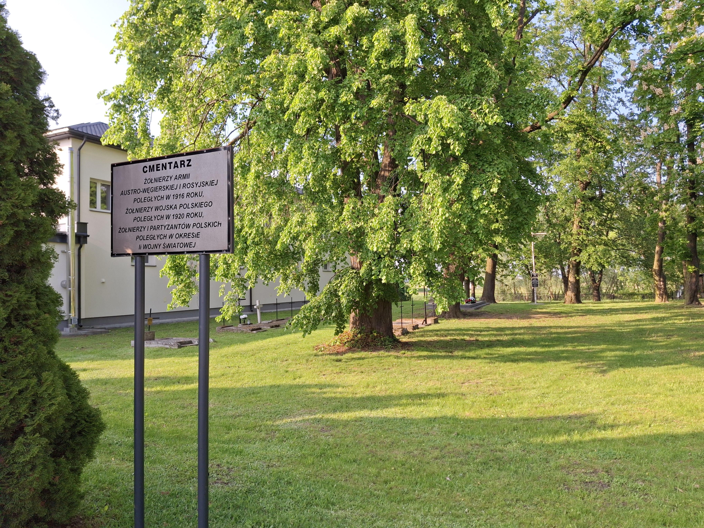
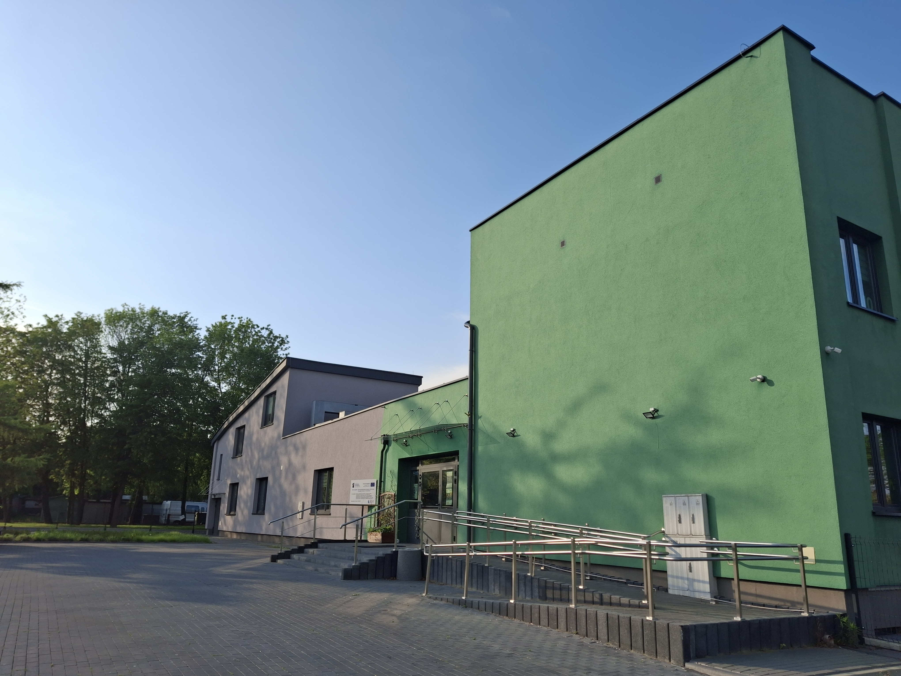
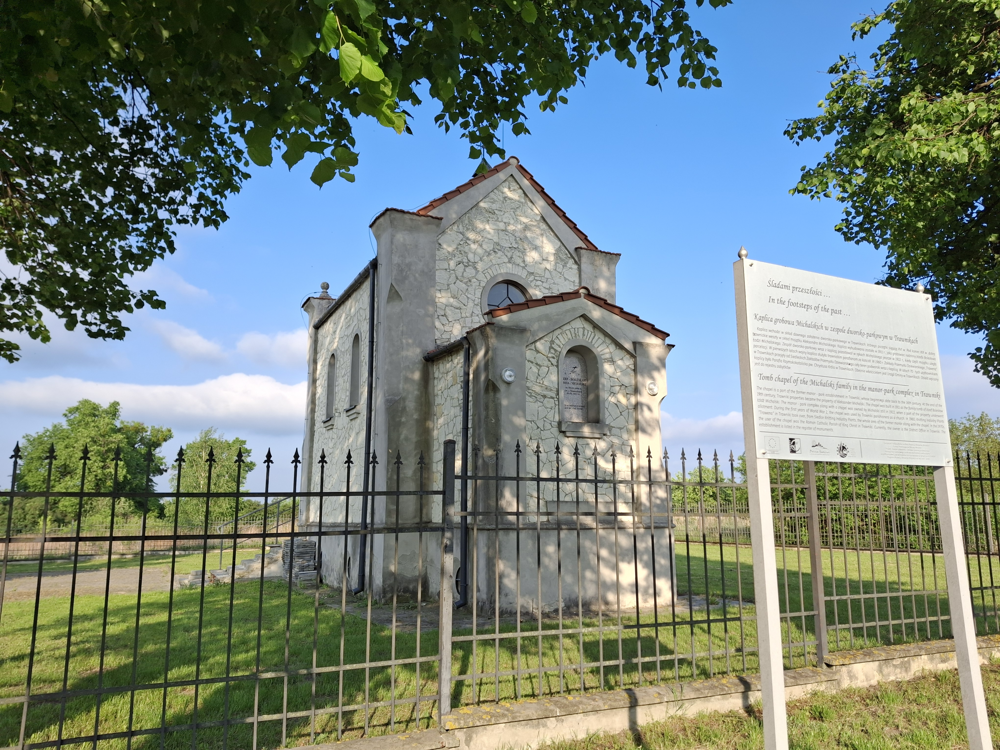
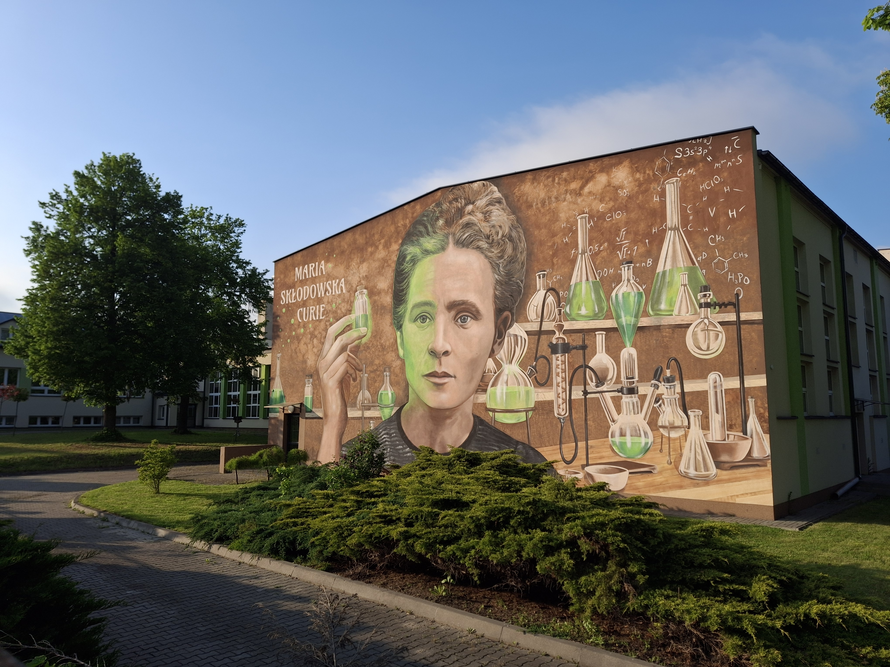
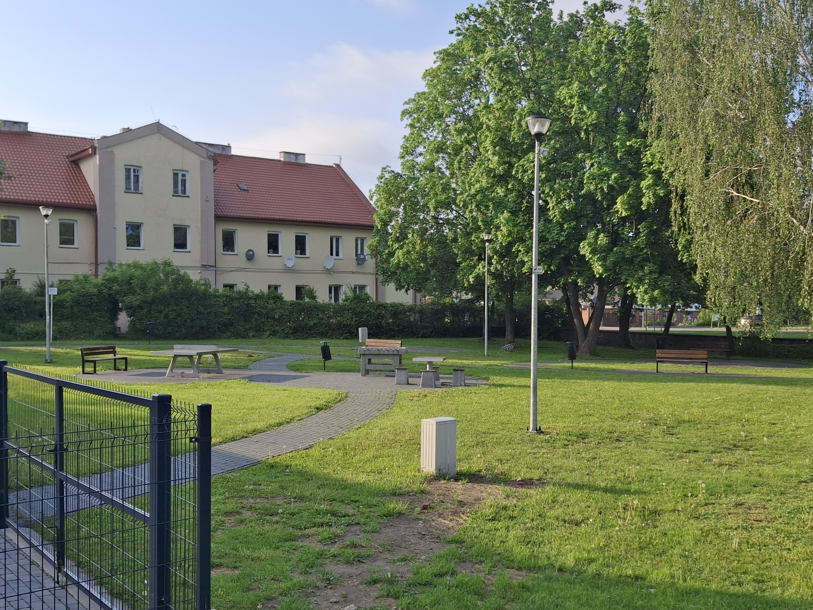
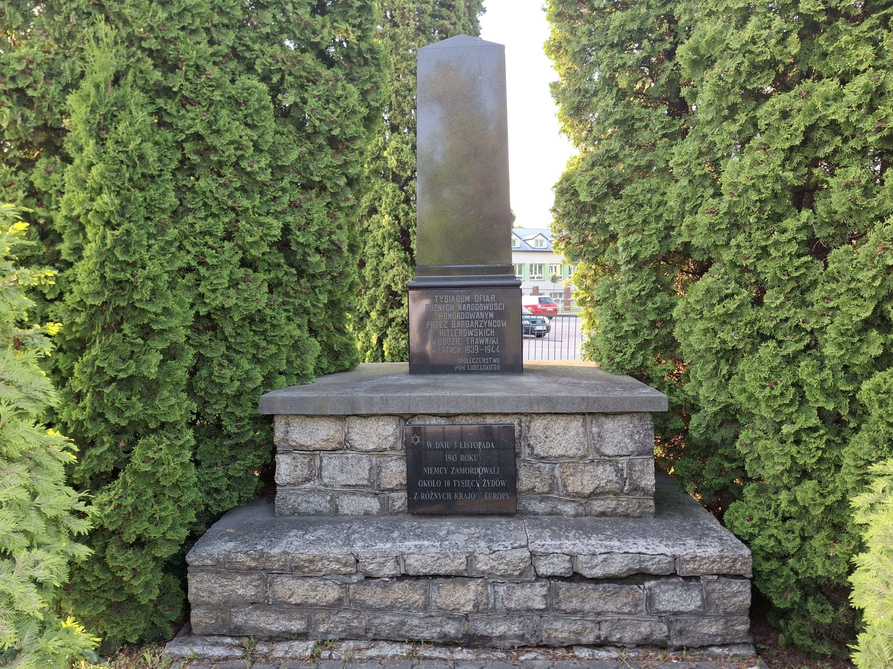
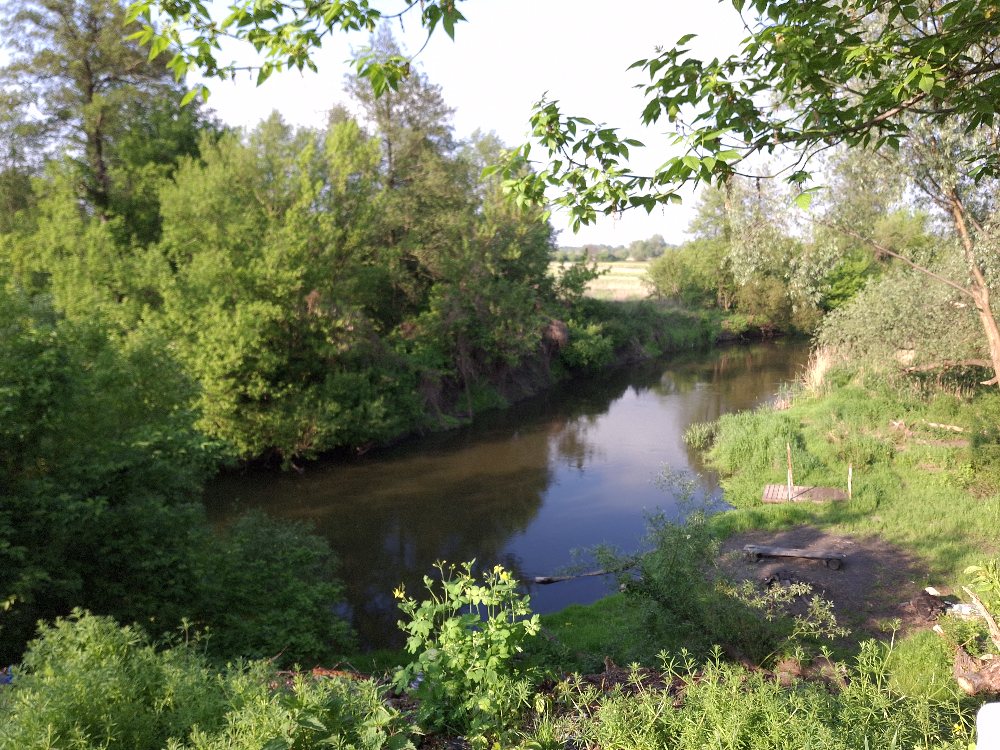

Cmentarz wojenny.
Leżący przy OSP w Trawnikach jest zabytkiem z 1 wojny światowej.

Gminny Ośrodek Kultury (GOK).
W budynku znajduje się biblioteka, oraz można tutaj uczyć się śpiweu, gry na instrumentach oraz tańca.

Zabytkowa kaplica grobowa Józefa Łodzi Michalskiego.
Znajduje się na cmentarzu parafialnym. Została zbudowana w 1888 roku.

Mural na ścianie budynku szkoły podst. w Trawnikach.
Mural upamiętniający Marię Skłodowską-Curie na budynku szkoły podstawowej w Trawnikach

Park za GOKiem.
Park, w którym można odpocząć, pograć w ping-ponga, szachy i spotkać się z kolegami/koleżankami na ławeczkach./p>

Zabytkowy pomnik ku tysiącom ofiar.
Pomnik ku tysiącom ofiar w Nazistowskich obozach zagłady.

Rzeka Wieprz.
Rzeka Wieprz przy, której leżą Trawniki, można wziąć udział w spływach kajakowych organizowanych przez tutejszą wypożyczalnię.